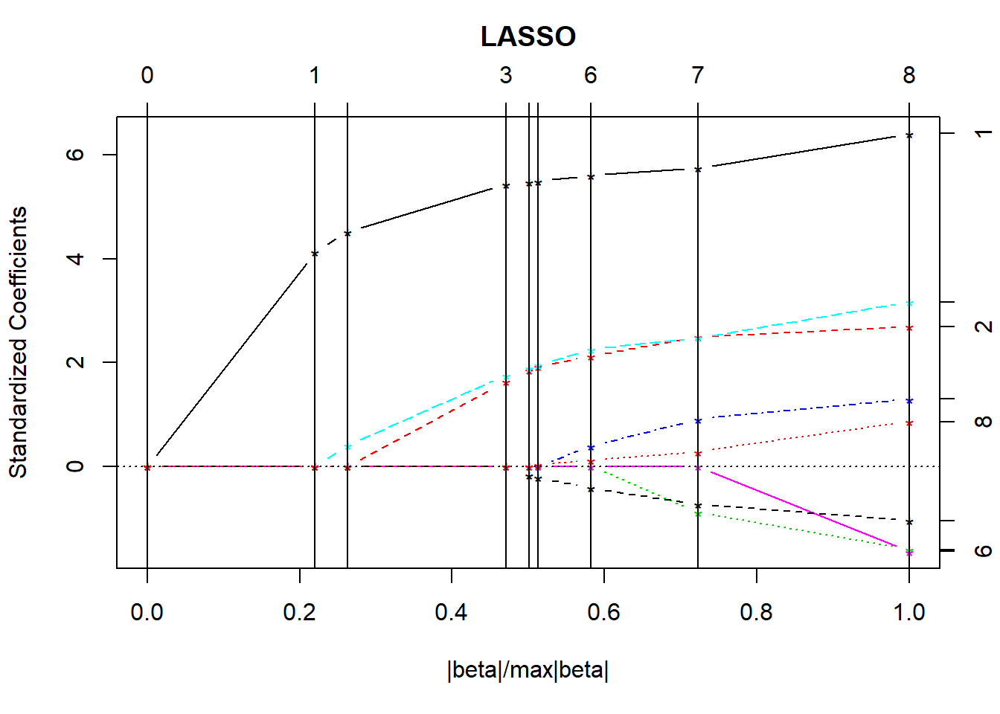

Chapter 11 Other Variable Selection Strategies
11.1 Why not use stepwise procedures?
- The R2 for a model selected in a stepwise manner is biased, high.
- The coefficient estimates and standard errors are biased.
- The \(p\) values for the individual-variable t tests are too small.
- In stepwise analyses of prediction models, the final model represented noise 20-74% of the time.
- In stepwise analyses, the final model usually contained less than half of the actual number of real predictors.
- It is not logical that a population regression coefficient would be exactly zero just because its estimate was not statistically significant.
This last comment applies to things like our “best subsets” approach as well as standard stepwise procedures.
Sander Greenland’s comments on parsimony and stepwise approaches to model selection are worth addressing…
- Stepwise variable selection on confounders leaves important confounders uncontrolled.
- Shrinkage approaches (like ridge regression and the lasso) are far superior to variable selection.
- Variable selection does more damage to confidence interval widths than to point estimates.
If we are seriously concerned about overfitting - winding up with a model that doesn’t perform well on new data - then stepwise approaches generally don’t help.
Vittinghoff et al. (2012) suggest four strategies for minimizing the chance of overfitting
- Pre-specify well-motivated predictors and how to model them.
- Eliminate predictors without using the outcome.
- Use the outcome, but cross-validate the target measure of prediction error.
- Use the outcome, and shrink the coefficient estimates.
The best subsets methods we have studied either include a variable or drop it from the model. Often, this choice is based on only a tiny difference in the quality of a fit to data.
- Harrell (2001): not reasonable to assume that a population regression coefficient would be exactly zero just because it failed to meet a criterion for significance.
- Brad Efron has suggested that a stepwise approach is “overly greedy, impulsively eliminating covariates which are correlated with other covariates.”
So, what’s the alternative?
11.2 Ridge Regression
Ridge regression involves a more smooth transition between useful and not useful predictors which can be obtained by constraining the overall size of the regression coefficients.
Ridge regression assumes that the regression coefficients (after normalization) should not be very large. This is reasonable to assume when you have lots of predictors and you believe many of them have some effect on the outcome.
Pros:
- Some nice statistical properties
- Can be calculated using only standard least squares approaches, so it’s been around for a while.
- Available in the
MASSpackage.
Ridge regression takes the sum of the squared estimated standardized regression coefficients and constrains that sum to only be as large as some value \(k\).
\[ \sum \hat{\beta_j}^2 \leq k. \]
The value \(k\) is one of several available measures of the amount of shrinkage, but the main one used in the MASS package is a value \(\lambda\). As \(\lambda\) increases, the amount of shrinkage goes up, and \(k\) goes down.
11.2.1 Assessing a Ridge Regression Approach
We’ll look at a plot produced by the lm.ridge function for a ridge regression for the prostate cancer study we worked on when studying Stepwise Regression and Best Subsets methods earlier.
- Several (here 101) different values for \(\lambda\), our shrinkage parameter, will be tested.
- Results are plotted so that we see the coefficients across the various (standardized) predictors.
- Each selection of a \(\lambda\) value implies a different vector of covariate values across the predictors we are studying.
- The idea is to pick a value of \(\lambda\) for which the coefficients seem relatively stable.
preds <- with(prost, cbind(lcavol, lweight, age, bph_f,
svi_f, lcp, gleason_f, pgg45))
x <- lm.ridge(prost$lpsa ~ preds, lambda = 0:100)
plot(x)
title("Ridge Regression for prost data")
abline(h = 0)Usually, you need to use trial and error to decide the range of \(\lambda\) to be tested. Here, 0:100 means going from 0 (no shrinkage) to 100 in steps of 1.
11.2.2 The lm.ridge plot - where do coefficients stabilize?
Does \(\lambda = 20\) seem like a stable spot here?
x <- lm.ridge(prost$lpsa ~ preds, lambda = 0:100)
plot(x)
title("Ridge Regression for prost data")
abline(h = 0)
abline(v=20, lty=2, col="black")
The coefficients at \(\lambda\) = 20 can be determined from the lm.ridge output. These are fully standardized coefficients. The original predictors are centered by their means and then scaled by their standard deviations and the outcome has also been centered, in these models.
round(x$coef[,20],3) predslcavol predslweight predsage predsbph_f predssvi_f
0.482 0.248 -0.091 0.097 0.252
predslcp predsgleason_f predspgg45
0.009 -0.099 0.061 Was an intercept used?
x$Inter[1] 1Yes, it was. There is an automated way to pick \(\lambda\). Use the select function in the MASS package:
MASS::select(x)modified HKB estimator is 4.210238
modified L-W estimator is 3.32223
smallest value of GCV at 6 I’ll use the GCV = generalized cross-validation to select \(\lambda\) = 6 instead.
x <- lm.ridge(prost$lpsa ~ preds, lambda = 0:100)
plot(x)
title("Ridge Regression for prost data")
abline(h = 0)
abline(v=6, lty=2, col="black")
x$coef[,6] predslcavol predslweight predsage predsbph_f predssvi_f
0.58911149 0.26773757 -0.13715070 0.11862949 0.29491008
predslcp predsgleason_f predspgg45
-0.09389545 -0.10477578 0.07250609 11.2.3 Ridge Regression: The Bottom Line
The main problem with ridge regression is that all it does is shrink the coefficient estimates, but it’s not so useful in practical settings because it still includes all variables.
- It’s been easy to do ridge regression for many years, so you see it occasionally in the literature.
- It leads to the lasso, which incorporates the positive features of shrinking regression coefficients with the ability to wisely select some variables to be eliminated from the predictor pool.
11.3 The Lasso
The lasso works by takes the sum of the absolute values of the estimated standardized regression coefficients and constrains it to only be as large as some value k.
\[ \sum \hat{|\beta_j|} \leq k. \]
This looks like a minor change, but it’s not.
11.3.1 Consequences of the Lasso Approach
- In ridge regression, while the individual coefficients shrink and sometimes approach zero, they seldom reach zero and are thus excluded from the model. With the lasso, some coefficients do reach zero and thus, those predictors do drop out of the model.
- So the lasso leads to more parsimonious models than does ridge regression.
- Ridge regression is a method of shrinkage but not model selection. The lasso accomplishes both tasks.
- If k is chosen to be too small, then the model may not capture important characteristics of the data. If k is too large, the model may over-fit the data in the sample and thus not represent the population of interest accurately.
- The lasso is far more difficult computationally than ridge regression (the problem requires an algorithm called least angle regression published in 2004), although R has a library (
lars) which can do the calculations pretty efficiently.
The lasso is not an acronym, but rather refers to cowboys using a rope to pull cattle from the herd, much as we will pull predictors from a model.
11.3.2 How The Lasso Works
The lars package lets us compute the lasso coefficient estimates and do cross-validation to determine the appropriate amount of shrinkage. The main tool is a pair of graphs.
- The first plot shows what coefficients get selected as we move from constraining all of the coefficients to zero (complete shrinkage) towards fewer constraints all the way up to ordinary least squares, showing which variables are included in the model at each point.
- The second plot suggests where on the first plot we should look for a good model choice, according to a cross-validation approach.
## requires lars package
lasso1 <- lars(preds, prost$lpsa, type="lasso")
plot(lasso1)
- The y axis shows standardized regression coefficients.
- The
larspackage standardizes all variables so the shrinkage doesn’t penalize some coefficients because of their scale.
- The
- The x-axis is labeled
|beta|/max|beta|.- This ranges from 0 to 1.
- 0 means that the sum of the \(|\hat{\beta_j}|\) is zero (completely shrunk)
- 1 means the ordinary least squares unbiased estimates.
The lasso graph starts at constraining all of the coefficients to zero, and then moves toward ordinary least squares.
Identifiers for the predictors (numbers) are shown to the right of the graph.
The vertical lines in the lasso plot show when a variable has been eliminated from the model, and in fact these are the only points that are actually shown in the default lasso graph. The labels on the top of the graph tell you how many predictors are in the model at that stage.
summary(lasso1)LARS/LASSO
Call: lars(x = preds, y = prost$lpsa, type = "lasso")
Df Rss Cp
0 1 127.918 168.1835
1 2 76.392 64.1722
2 3 70.247 53.5293
3 4 50.598 15.1017
4 5 49.065 13.9485
5 6 48.550 14.8898
6 7 46.284 12.2276
7 8 44.002 9.5308
8 9 42.772 9.0000Based on the Cp statistics, it looks like the improvements continue throughout, and don’t really finish happening until we get pretty close to the full model with 9 df.
11.3.3 Cross-Validation with the Lasso
Normally, cross-validation methods are used to determine how much shrinkage should be used. We’ll use the cv.lars function.
- 10-fold (K = 10) cross-validation
- the data are randomly divided into 10 groups.
- Nine groups are used to predict the remaining group for each group in turn.
- Overall prediction performance is computed, and the machine calculates a cross-validation criterion (mean squared error) and standard error for that criterion.
The cross-validation plot is the second lasso plot.
set.seed(432)
lassocv <- cv.lars(preds, prost$lpsa, K=10)## default cv.lars K is 10We’re looking to minimize cross-validated mean squared error in this plot, which doesn’t seem to happen until the fraction gets very close to 1.
11.3.4 What value of the key fraction minimizes cross-validated MSE?
frac <- lassocv$index[which.min(lassocv$cv)]
frac[1] 0.989899The cross-validation plot suggests we use a fraction of about 0.3, that’s suggesting a model with 4-5 predictors, based on the top LASSO plot.
par(mfrow=c(2,1))
lasso1 <- lars(preds, prost$lpsa, type="lasso")
plot(lasso1)
set.seed(432)
lassocv <- cv.lars(preds, prost$lpsa, K=10)par(mfrow=c(1,1))11.3.5 Coefficients for the Model Identified by the Cross-Validation
coef.cv <- coef(lasso1, s=frac, mode="fraction")
round(coef.cv,4) lcavol lweight age bph_f svi_f lcp gleason_f
0.5529 0.6402 -0.0217 0.1535 0.7750 -0.1155 -0.1826
pgg45
0.0030 So the model suggested by the lasso still includes all sight of these predictors.
11.3.6 Obtaining Fitted Values from Lasso
fits.cv <- predict.lars(lasso1, preds, s=frac,
type="fit", mode="fraction")
fits.cv$s
[1] 0.989899
$fraction
[1] 0.989899
$mode
[1] "fraction"
$fit
[1] 0.7995838 0.7493971 0.5111634 0.6098520 1.7001847 0.8338020 1.8288518
[8] 2.1302316 1.2487955 1.2661752 1.4704969 0.7782005 2.0755860 1.9129272
[15] 2.1533975 1.8124981 1.2713610 2.3993624 1.3232566 1.7709029 1.9757841
[22] 2.7451649 1.1658326 2.4825521 1.8036338 1.9112578 2.0144298 1.7829219
[29] 1.9706111 2.1688199 2.0377131 1.8657882 1.6955904 1.3580186 1.0516394
[36] 2.9097450 2.1898622 1.0454123 3.8896481 1.7971270 2.0932871 2.3253395
[43] 2.0809295 2.5303655 2.4451523 2.5827203 4.0692397 2.6845105 2.7034959
[50] 1.9590266 2.4522082 2.9801227 2.1902084 3.0559124 3.3447025 2.9765233
[57] 1.7620182 2.3424646 2.2856404 2.6188548 2.3056410 3.5568662 2.9756755
[64] 3.6764122 2.5097586 2.6579014 2.9482717 3.0892917 1.5113015 3.0282296
[71] 3.2887119 2.1083273 2.8889223 3.4903026 3.6959516 3.6070031 3.2749993
[78] 3.4518575 3.4049180 3.1814731 2.0496216 2.8986175 3.6743113 3.3292860
[85] 2.6965297 3.8339856 2.9892543 3.0555536 4.2903885 3.0986508 3.3784385
[92] 4.0205201 3.8309974 4.7531590 3.6290575 4.1347645 4.098274411.3.7 Complete Set of Fitted Values from the Lasso
round(fits.cv$fit,3) [1] 0.800 0.749 0.511 0.610 1.700 0.834 1.829 2.130 1.249 1.266 1.470
[12] 0.778 2.076 1.913 2.153 1.812 1.271 2.399 1.323 1.771 1.976 2.745
[23] 1.166 2.483 1.804 1.911 2.014 1.783 1.971 2.169 2.038 1.866 1.696
[34] 1.358 1.052 2.910 2.190 1.045 3.890 1.797 2.093 2.325 2.081 2.530
[45] 2.445 2.583 4.069 2.685 2.703 1.959 2.452 2.980 2.190 3.056 3.345
[56] 2.977 1.762 2.342 2.286 2.619 2.306 3.557 2.976 3.676 2.510 2.658
[67] 2.948 3.089 1.511 3.028 3.289 2.108 2.889 3.490 3.696 3.607 3.275
[78] 3.452 3.405 3.181 2.050 2.899 3.674 3.329 2.697 3.834 2.989 3.056
[89] 4.290 3.099 3.378 4.021 3.831 4.753 3.629 4.135 4.098To assess the quality of these predictions, we might plot them against the observed values of our outcome (lpsa), or we might look at residuals vs. these fitted values.
prost_lasso_res <- data_frame(fitted = fits.cv$fit,
actual = prost$lpsa,
resid = actual - fitted)
ggplot(prost_lasso_res, aes(x = actual, y = fitted)) +
geom_point() +
geom_abline(slope = 1, intercept = 0) +
labs(y = "Fitted log(PSA) from Cross-Validated LASSO",
x = "Observed values of log(PSA)",
title = "Fitted vs. Actual Values of log(PSA)")ggplot(prost_lasso_res, aes(x = fitted, y = resid)) +
geom_point() +
geom_hline(yintercept = 0, col = "red") +
geom_smooth(method = "loess", col = "blue", se = F) +
labs(x = "LASSO-fitted log(PSA)",
y = "Residuals from Cross-Validated LASSO model",
title = "Residuals vs. Fitted Values of log(PSA) from LASSO",
subtitle = "with loess smooth")11.3.8 When is the Lasso Most Useful?
As Faraway (2015) suggests, the lasso is particularly useful when we believe the effects are sparse, in the sense that we believe that few of the many predictors we are evaluating have a meaningful effect.
Consider, for instance, the analysis of gene expression data, where we have good reason to believe that only a small number of genes have an influence on our response of interest.
Or, in medical claims data, where we can have thousands of available codes to search through that may apply to some of the people included in a large analysis relating health care costs to outcomes.
11.4 Applying the Lasso to the pollution data
Let’s consider the lasso approach in application to the pollution data we’ve seen previously. Recall that we have 60 observations on an outcome, y, and 15 predictors, labeled x1 through x15.
preds <- with(pollution, cbind(x1, x2, x3, x4, x5, x6, x7,
x8, x9, x10, x11, x12, x13,
x14, x15))
lasso_p1 <- lars(preds, pollution$y, type="lasso")
plot(lasso_p1)
summary(lasso_p1)LARS/LASSO
Call: lars(x = preds, y = pollution$y, type = "lasso")
Df Rss Cp
0 1 228311 129.1367
1 2 185419 95.9802
2 3 149370 68.4323
3 4 143812 65.8764
4 5 92077 25.4713
5 6 83531 20.4668
6 7 69532 10.9922
7 8 67682 11.4760
8 9 60689 7.7445
9 10 60167 9.3163
10 11 59609 10.8588
11 12 58287 11.7757
12 13 57266 12.9383
13 14 56744 14.5107
14 13 56159 12.0311
15 14 55238 13.2765
16 15 53847 14.1361
17 16 53681 16.0000Based on the Cp statistics, it looks like the big improvements occur somewhere around the move from 6 to 7 df. Let’s look at the cross-validation
set.seed(432012)
pollution_lassocv <- cv.lars(preds, pollution$y, K=10)Here it looks like cross-validated MSE happens somewhere between a fraction of 0.2 and 0.4.
frac <- pollution_lassocv$index[which.min(pollution_lassocv$cv)]
frac[1] 0.3535354par(mfrow=c(2,1))
lasso_p1 <- lars(preds, pollution$y, type="lasso")
plot(lasso_p1)
set.seed(432012)
pollution_lassocv <- cv.lars(preds, pollution$y, K=10)par(mfrow=c(1,1))It looks like a model with 6-8 predictors will be the most useful. The cross-validated coefficients are as follows:
poll.cv <- coef(lasso_p1, s=frac, mode="fraction")
round(poll.cv,3) x1 x2 x3 x4 x5 x6 x7 x8 x9
1.471 -1.164 -1.102 0.000 0.000 -10.610 -0.457 0.003 3.918
x10 x11 x12 x13 x14 x15
0.000 0.000 0.000 0.000 0.228 0.000 Note that by this cross-validated lasso selection, not only are the coefficients for the 8 variables remaining in the model shrunken, but variables x4, x5, x10, x11, x12, x13 and x15 are all dropped from the model, and model x8 almost is, as well.
poll_fits <- predict.lars(lasso_p1, preds, s=frac,
type="fit", mode="fraction")
round(poll_fits$fit,3) [1] 932.627 918.415 921.904 987.396 1050.184 1065.837 912.424
[8] 916.605 949.647 926.168 996.625 1017.362 977.730 954.550
[15] 931.455 894.263 931.551 868.599 973.471 940.937 881.867
[22] 906.666 973.609 919.640 933.821 956.352 913.018 925.650
[29] 874.528 983.829 1042.870 915.002 937.760 885.464 989.947
[36] 931.709 1013.795 969.729 1003.962 983.813 896.042 918.446
[43] 934.609 1004.565 910.273 976.747 831.132 907.996 826.485
[50] 895.082 909.398 917.969 926.777 917.381 991.266 879.972
[57] 942.867 913.737 960.952 949.030Here’s a plot of the actual pollution y values, against these fitted values.
poll_lasso_res <- data_frame(fitted = poll_fits$fit,
actual = pollution$y,
resid = actual - fitted)
ggplot(poll_lasso_res, aes(x = actual, y = fitted)) +
geom_point() +
geom_abline(slope = 1, intercept = 0) +
labs(y = "Fitted y values from Cross-Validated LASSO",
x = "Observed values of y = Age-Adjusted Mortality Rate",
title = "Fitted vs. Actual Values of Age-Adjusted Mortality")And now, here’s a plot or residuals vs. fitted values.
ggplot(poll_lasso_res, aes(x = fitted, y = resid)) +
geom_point() +
geom_hline(yintercept = 0, col = "red") +
geom_smooth(method = "loess", col = "blue", se = F) +
labs(x = "LASSO-fitted Age-Adjusted Mortality",
y = "Residuals from Cross-Validated LASSO model",
title = "Residuals vs. Fitted Values of Age-Adjusted Mortality from LASSO",
subtitle = "with loess smooth")References
Vittinghoff, Eric, David V. Glidden, Stephen C. Shiboski, and Charles E. McCulloch. 2012. Regression Methods in Biostatistics: Linear, Logistic, Survival, and Repeated Measures Models. Second Edition. Springer-Verlag, Inc. http://www.biostat.ucsf.edu/vgsm/.
Harrell, Frank E. 2001. Regression Modeling Strategies. New York: Springer.
Faraway, Julian J. 2015. Linear Models with R. Second. Boca Raton, FL: CRC Press.